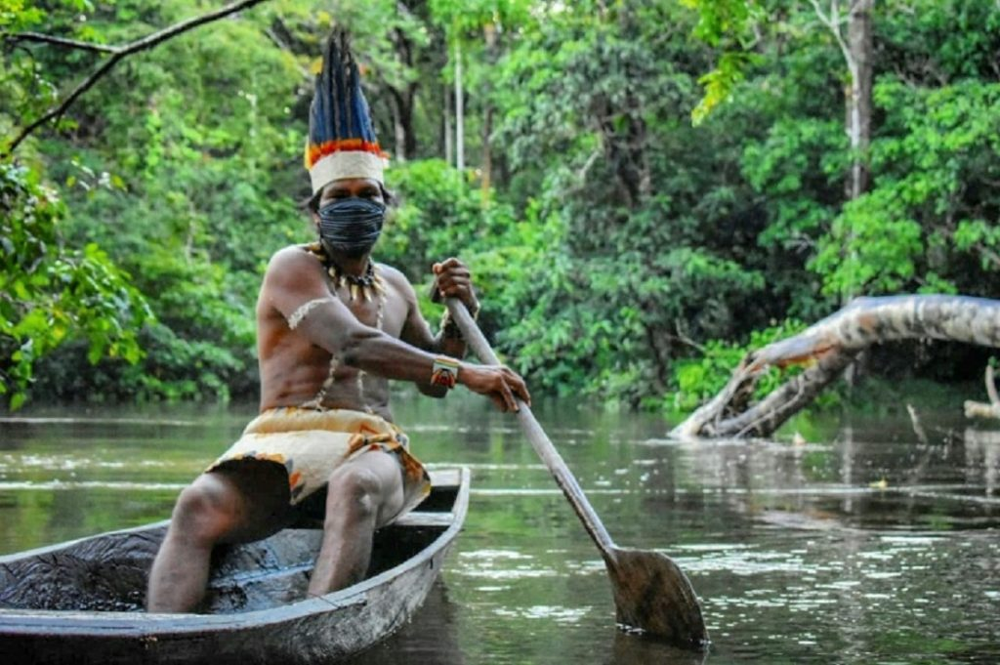
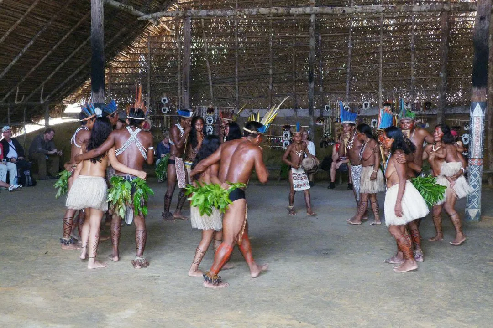
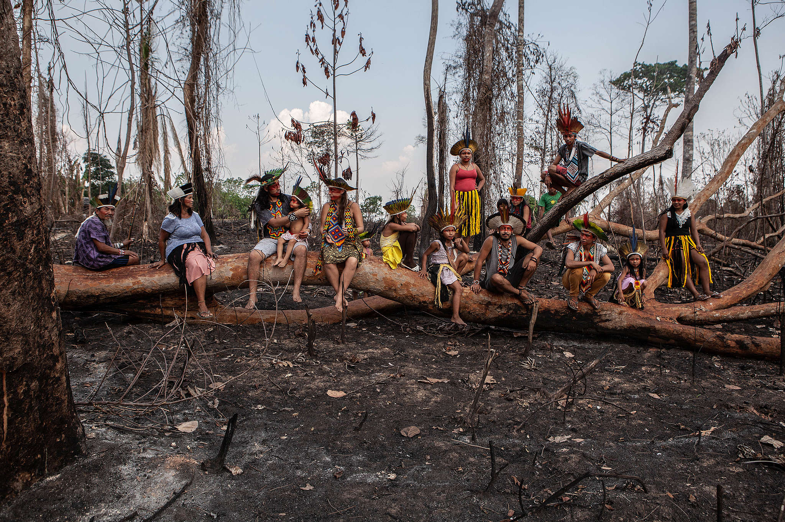

As etnias indígenas sempre viveram em perfeito equilíbrio com o ecossistema, o que foi quebrado a partir das influências do elemento desestabilizador, "o homem branco". Fruto da colonização e de frentes de expansão capitalista, a exploração desordenada depauperou indiscriminadamente muitas regiões brasileiras. Esvaíram-se as riquezas do solo, subsolo, florestas, rios e o índio acabou sendo levado a um processo de desaparecimento, entre os exemplos estão os Guarani e Guató, hoje tão poucos.
As concepções indígenas de "natureza" variam bastante, pois cada povo tem um modo particular de conceber o meio ambiente e de compreender as relações que estabelece com ela. Porém, a idéia de que o "mundo natural" é antes de tudo uma ampla rede de inter-relações entre agentes, sejam eles humanos ou não, é comum a todos eles. Isto significa dizer que os homens estão sempre interagindo com a "natureza" e que esta não é jamais intocada. Os Yanomami, por exemplo, utilizam a palavra "urihi" para se referir à "terra-floresta", entidade viva, dotada de um "sopro vital" de um "princípio de fertilidade" de origem mítica. Urihi é habitada e animada por espíritos diversos, entre eles os espíritos dos pajés yanomami, também seus guardiões.
A professora do Departamento de Antropologia da Universidade Federal de Mato Grosso (UFMT), Thereza Martha Borges Bressotti, uma das curadoras da exposição Patrimônio Imaterial Mato-grossense, em cartaz no Museu de Arte e de Cultura Popular, lembra que nas celebrações indígenas, a fauna e a flora são a essência dos rituais, o que se reflete na arte indígena de modo geral. Ela cita o ritual Yaokwa dos Enawene Nawe, no Vale do Juruena. "Para os índios, o ritual é um banquete dos espíritos, os donos dos recursos naturais. Eles usam adornos feitos com restos da vegetação e imitam os animais. Em um dos rituais dos Bororos, a onça é a ponte entre o homem e o mundo espiritual.
"Na opinião do antropólogo e professor da Universidade do Estado de Mato Grosso (Unemat), Elias Januário, coordenador da Faculdade Indígena Intercultural, os povos indígenas têm, ao longo dos anos, estabelecido uma relação com a natureza onde o respeito para com a Terra tem sido pautado nas trocas de reciprocidade, ou seja, retira-se o sustendo, os alimentos necessários para a sobrevivência, mas ao mesmo tempo mantém com o meio ambiente uma relação harmoniosa e de equilíbrio, que faz com que ação não seja apenas de exploração, como vemos na relação de uma parcela considerável da sociedade não índia. "Os povos indígenas, em sua maioria, possuem uma rico acervo de concepções cosmológicas (principalmente de origem da vida) que estão diretamente relacionadas com os elementos da natureza como plantas, animais, rios, lagos, pedreiras, entre outros, que fazem com que eles se sintam parte integrante da natureza. Por exemplo, os Rikbaksa têm como mito de origem serem filhos do peixe cará, por isso eles não comem esse peixe, nem destrói o ambiente onde ele vive, passa a ser sagrado para eles", diz essa relação afetuosa que os povos indígenas estabelecem com a natureza faz com que a maioria mantenha uma relação mais próxima e sagrada, como se a Terra fosse a grande mãe, uma dádiva, uma parte integrante da vida em sociedade. Bem diferente da relação dos não indígenas, quase sempre marcada pela dominação do meio ambiente.
Januário ressalta ainda que os indígenas também guardam na natureza sua lembranças, suas vivências imemoriais, onde a terra é um espaço e tempo que se constitui na história de cada etnia, seja nos rituais, nas lutas, nos mitos, nas roças e nos diferentes momentos de formação social da pessoa. "Precisamos aprender com os povos da floresta, do cerrado e do pantanal como conviver com a natureza e dela retirar o necessário sem com isso destruí-la por completo. Essa relação de equilíbrio que os povos indígenas têm conseguido estabelecer ao longo de gerações, serve de exemplo para que a sociedade, tida como desenvolvida e moderna, possa parar e refletir sobre a necessidade imediata de rever os paradigmas estabelecidos e voltar a ter uma relação de contemplação e trocas de reciprocidades com o meio ambiente"